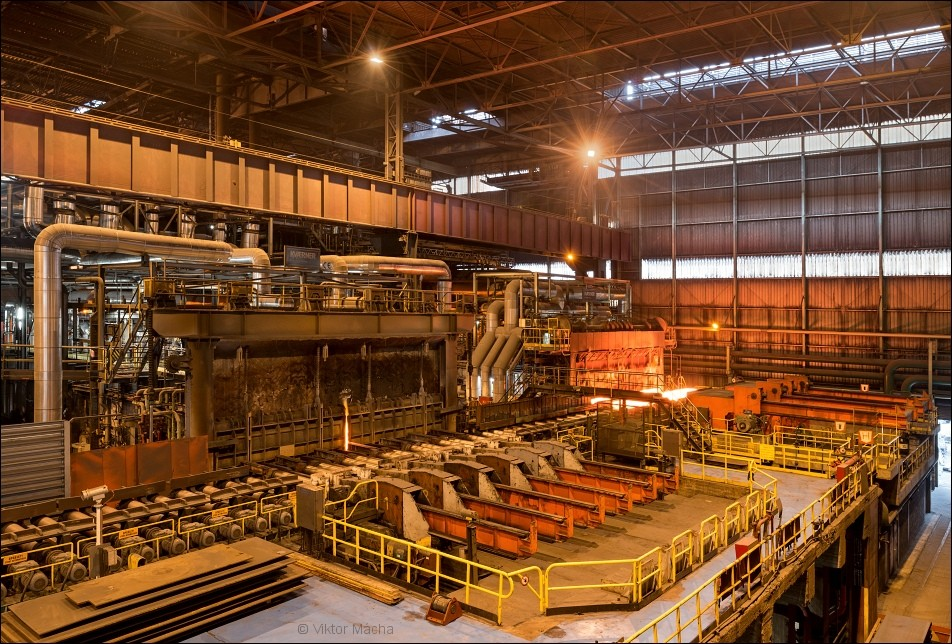
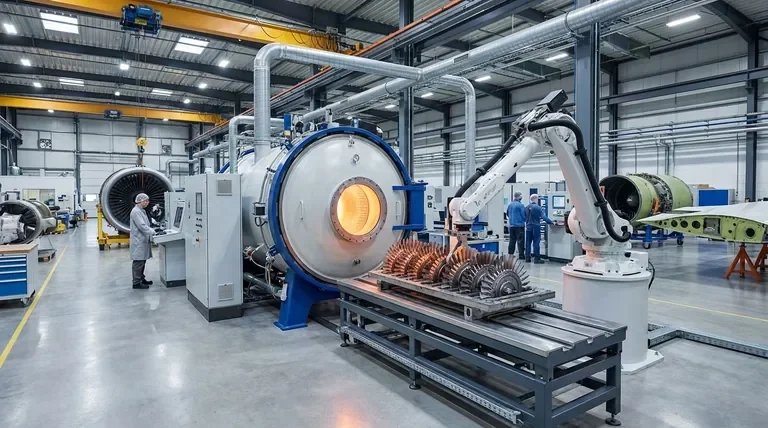
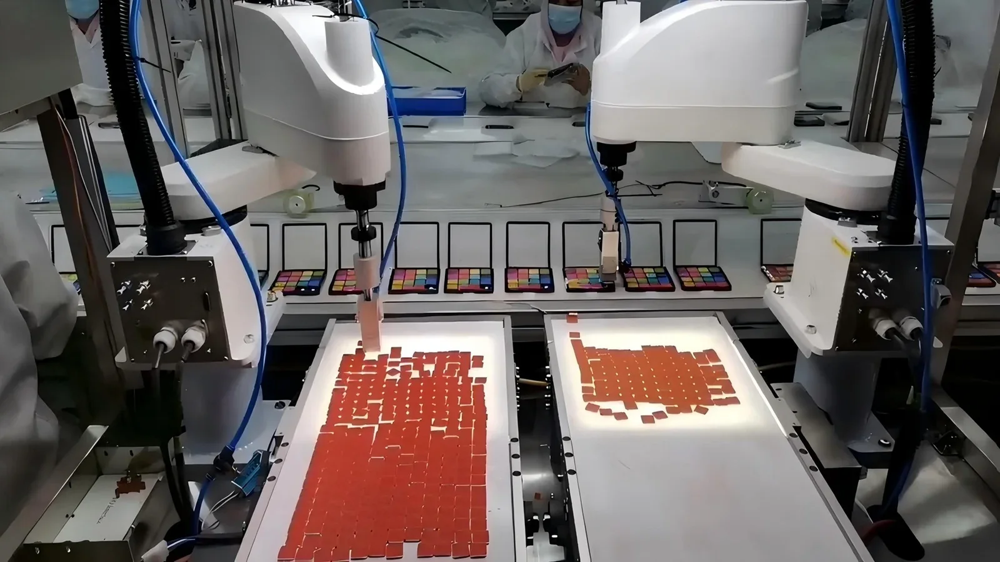
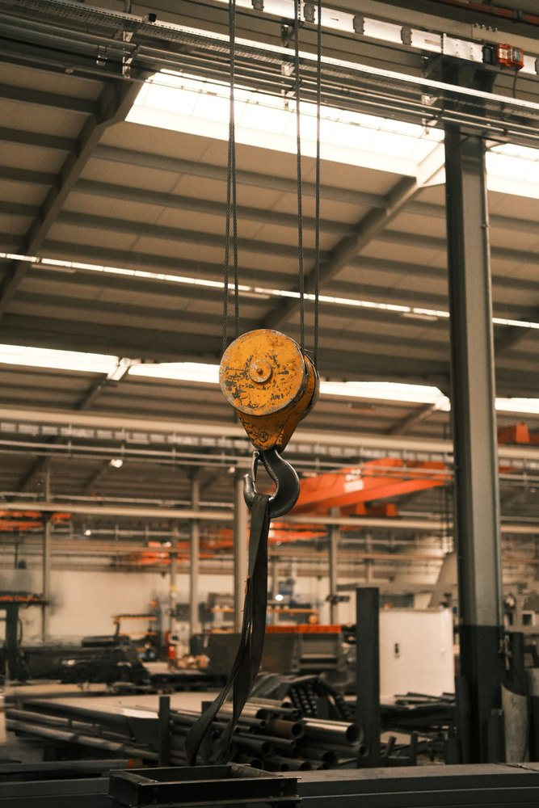
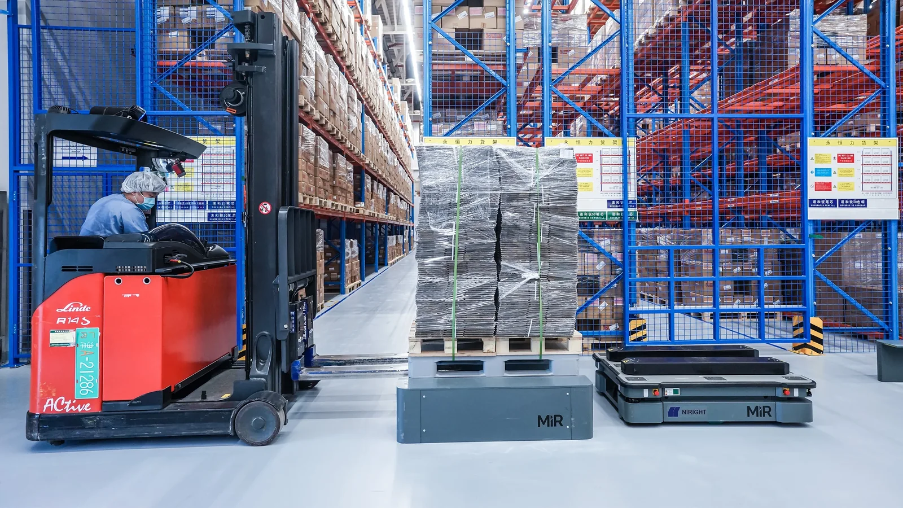
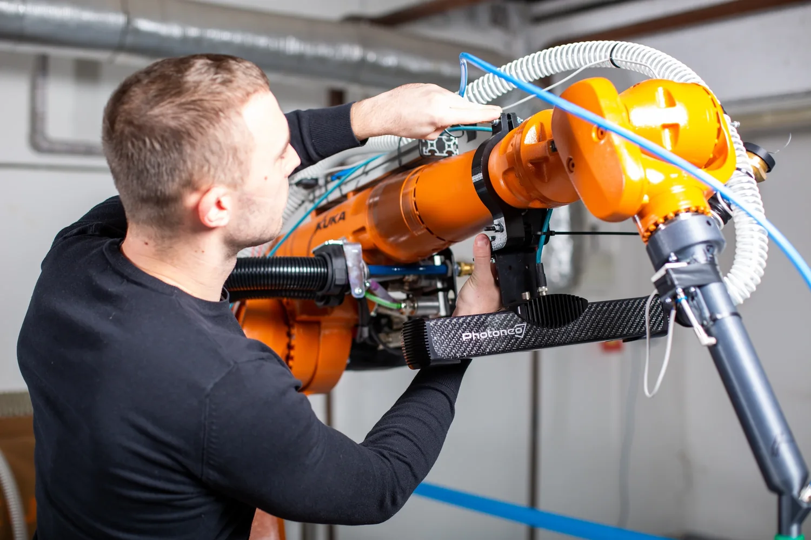
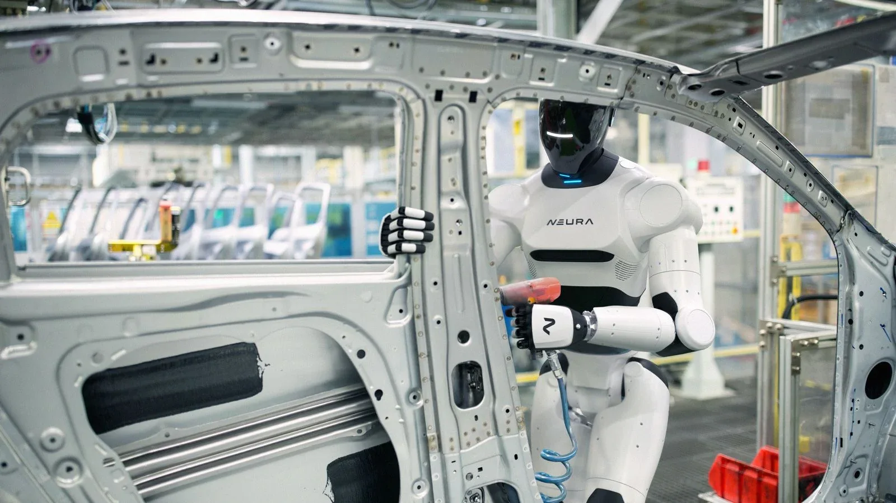

Traitement thermique
Fours industriels
Pilotage des interfaces process, utilités, automatismes, essais et mise en service.
Piloter vos projets industriels complexes avec méthode, rigueur et engagement — de l’avant-projet jusqu’au SAV.

Pilotage des interfaces process, utilités, automatismes, essais et mise en service.

Chambres, pompage, instrumentation, manutention et exigences de propreté.

Coordination des machines, contrôles, flux et interfaces entre intégrateurs.

Préparation des levages, moyens adaptés, sécurité, logistique et contraintes site.

Transfert, cadence, disponibilité, logistique interne et performance opérationnelle.

Robotique, vision, sécurité machine, validation fonctionnelle et montée en cadence.
Chef de projet dans l’industrie depuis huit ans, je suis passionné par les technologies de pointe et par les environnements cadrés à forte valeur ajoutée. J’aime rendre le projet lisible grâce à des livrables précis, à jour et directement exploitables par la direction.
ALPES'Ex est né d’un constat simple : trop de projets avancent sans vision claire. Avec une méthode rigoureuse, une traçabilité maîtrisée et une communication structurée, la direction sait où en est le projet, quels risques doivent être arbitrés et quelles décisions doivent être prises.
La valeur ajoutée d’un chef de projet ne réside pas seulement dans la transmission d’informations, mais dans la coordination, l’anticipation, l’alerte au bon moment et la capacité à transformer un risque en obstacle franchi.
Discutons de vos projets →La méthode ASM repose sur trois principes : anticiper les dérives, sécuriser les décisions et maîtriser l’exécution. Le PC ASM en est l’outil de pilotage : il transforme les informations du projet en données claires, structurées et directement utilisables par le client et la direction.
Identifier les signaux faibles, les interfaces critiques, les décisions en attente et les risques avant qu’ils ne deviennent des retards ou des surcoûts.
Structurer les responsabilités, les validations, les échéances, la traçabilité et les plans d’actions pour fiabiliser l’avancement du projet.
Donner une vision consolidée des coûts, délais, risques, livrables et décisions afin de piloter le projet jusqu’à sa clôture.
Le PC ASM regroupe les jalons, les risques, les actions, les décisions, les coûts, les délais et les livrables dans un même environnement de pilotage.
Le client comprend immédiatement où en est le projet, ce qui bloque, ce qui doit être décidé et quelles actions sont engagées.
Chaque information importante est structurée, historisée et associée à un responsable, une échéance et un impact projet.
Contrairement à un simple planning, le PC ASM relie l’avancement aux risques, aux responsabilités, aux arbitrages et aux conséquences financières ou calendaires.
Cadrage du besoin, faisabilité, budget, risques et planning cible.
Analyse technico-économique, enjeux contractuels et données disponibles.
Définition des rôles, responsabilités, gouvernance et communication.
Jalons, livrables, plan d’actions, risques et règles de fonctionnement.
Pilotage technique, validations, interfaces et suivi documentaire.
Suivi fournisseurs, délais critiques, conformité et anticipation des écarts.
Avancement, qualité, charge, points bloquants et plans de rattrapage.
FAT, validation qualité, réserves et préparation de l’expédition.
Emballage, logistique, levage, douane et coordination site.
Organisation chantier, sécurité, interfaces et suivi quotidien.
Montée en performance, réception, formation et traitement des réserves.
Bilan, capitalisation, transfert des connaissances et amélioration continue.
Ces visuels illustrent les domaines d’activité dans lesquels ALPES’Ex peut intervenir. Ils sont volontairement distincts des photos utilisées dans les retours d’expérience.

Lignes de production, automatisation, cadence et transferts industriels.

Process exigeants, qualité, traçabilité et validations techniques.

Machines spéciales, installations complexes et coordination multi-métiers.

Interfaces utilités, équipements techniques et mise en service.

Levage, déménagement industriel, logistique et contraintes chantier.

Équipements de production, maintenance et disponibilité industrielle.
Les expériences ci-dessous ne présentent pas une prestation de conception ou de fabrication. Elles illustrent exclusivement la manière dont ALPES’Ex structure et pilote un projet industriel.

Problématique : plusieurs installations menées en parallèle, retards croisés, équipes multiples et forte pression sur les jalons.
Réponse en gestion de projet : consolidation du planning, coordination des interfaces, priorisation des actions, animation des équipes et reporting direction.
Problématique : multiplicité des sujets techniques, essais à préparer, réserves à suivre et coordination entre atelier et site client.
Réponse en gestion de projet : structuration des jalons, suivi des points ouverts, coordination des responsables, préparation des validations et pilotage de la clôture.
Problématique : évolution du périmètre, validations nombreuses, contraintes qualité élevées et besoin de visibilité direction.
Réponse en gestion de projet : maîtrise des modifications, suivi budgétaire, coordination technique, gestion des validations et pilotage des risques.
Problématique : reproduire une installation existante tout en intégrant de nouvelles contraintes site et utilités.
Réponse en gestion de projet : capitalisation du retour d’expérience, suivi des écarts, coordination des métiers, sécurisation des interfaces et pilotage jusqu’à la mise en service.
Problématique : changement de destination, délai fortement réduit, moyens de levage à sécuriser et logistique internationale à réorganiser.
Réponse en gestion de projet : replanification, coordination des prestataires, sécurisation des moyens, arbitrages quotidiens et communication client renforcée.
Problématique : besoin de fiabiliser la disponibilité d’une installation neuve sans vision consolidée des opérations futures.
Réponse en gestion de projet : structuration du programme, planification, coordination des intervenants, suivi des actions et mise en place des indicateurs de pilotage.
Pas de recrutement long pour une mission temporaire. L’intervention s’adapte au projet, à sa charge et à sa durée réelle.
Une culture projet déjà acquise dans des environnements internationaux, techniques et fortement exigeants.
Un regard externe facilite le diagnostic, l’alerte, la priorisation et la prise de décision sans perdre la réalité du terrain.
Une prestation ciblée, sans les coûts indirects d’un recrutement durable pour une mission « one shot ».
Projet en retard, lancement d’une installation, surcharge temporaire, déménagement industriel, absence d’un chef de projet, besoin de structuration, difficulté de coordination ou manque de visibilité direction.
Le planning ne suffit pas. Il faut relier décisions, risques, ressources et actions correctives.
Disponibilité des études, dérive fournisseur, décisions en attente, charge terrain et communication incomplète.
Moins de comptes rendus descriptifs, davantage de décisions, responsables, échéances et impacts.
Non. ALPES'Ex intervient en Rhône-Alpes, partout en France et à distance selon la nature du projet. Les déplacements sont organisés en fonction des phases critiques et des besoins terrain.
Oui. Les missions peuvent inclure des déplacements en Europe et hors Europe, notamment pour les essais, les transferts industriels, les chantiers et les mises en service.
Selon le niveau de définition du besoin, la mission peut être proposée au temps passé, sur une base journalière, ou au forfait pour un périmètre clairement défini.
Le tarif dépend du périmètre, de la durée, du lieu d’intervention, du niveau de responsabilité et des déplacements. Une proposition claire est établie après un premier échange.
Oui. C’est même l’un des principaux avantages d’un chef de projet externalisé : s’intégrer rapidement à l’organisation existante tout en apportant méthode, recul et capacité de coordination.
Oui, lorsque cela est nécessaire. Le PC ASM complète les outils existants sans chercher à remplacer l’ERP, la GED ou le planning de l’entreprise.
Décrivez brièvement votre besoin, votre contexte et vos contraintes. Vous recevrez une première réponse sur le mode d’intervention le plus adapté.
alpes.ex.asm@gmail.com